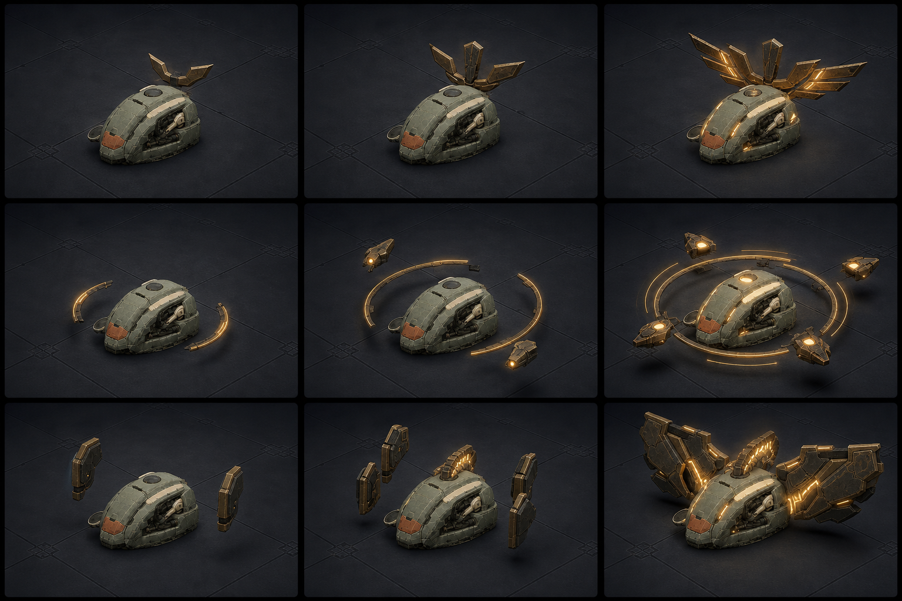
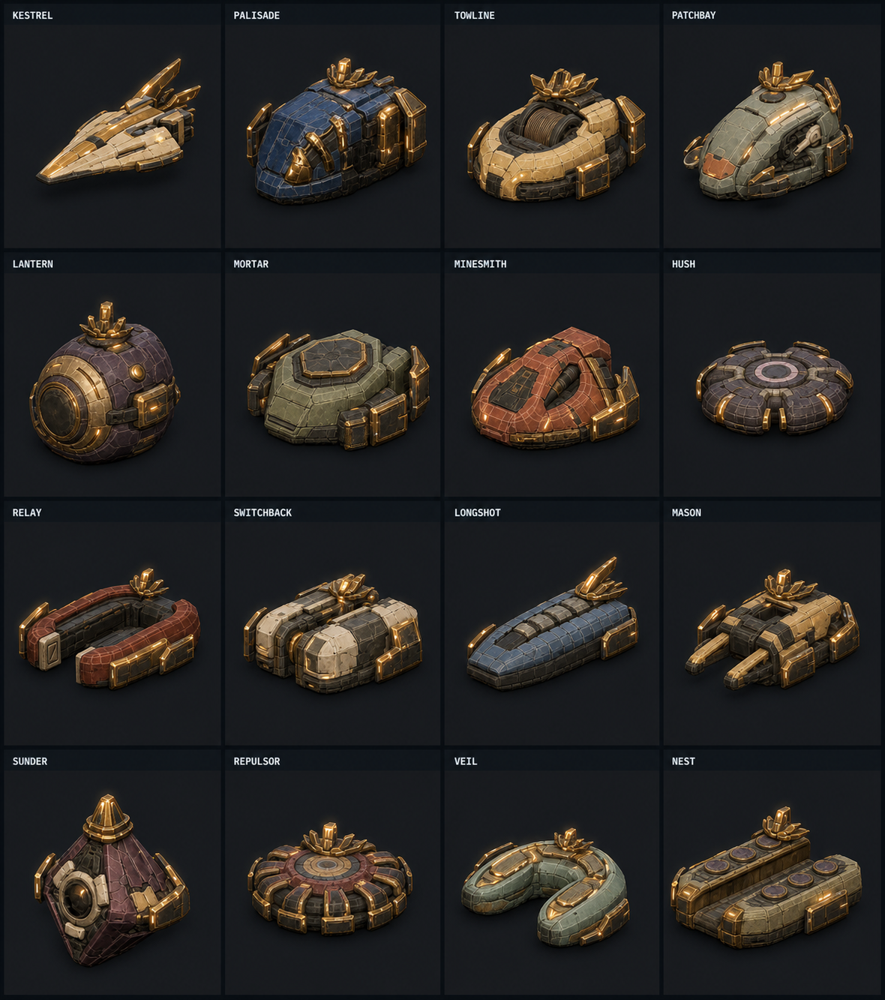
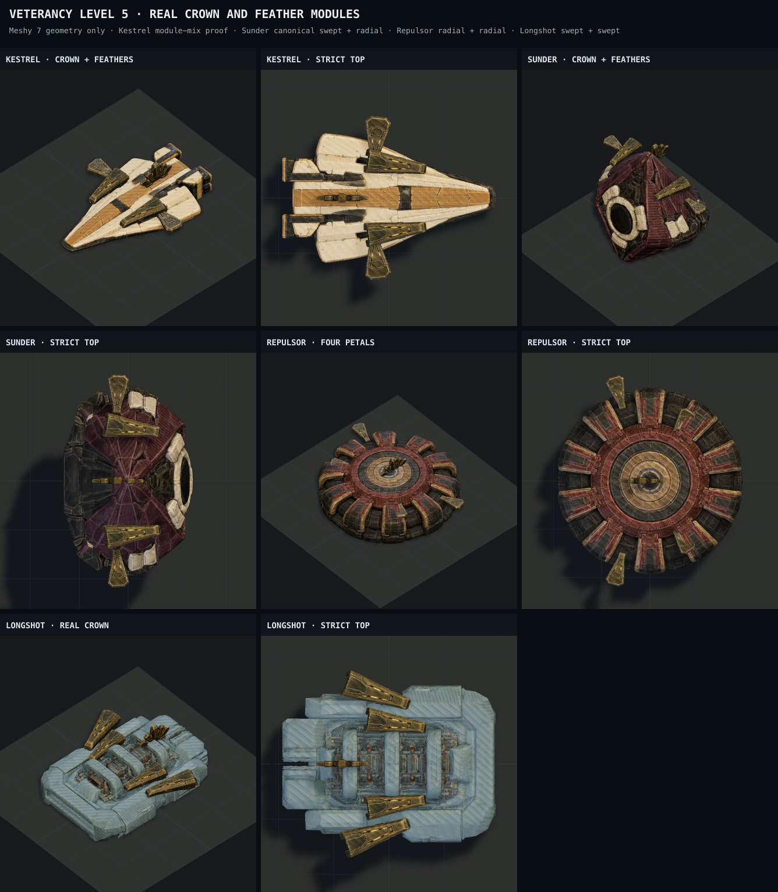
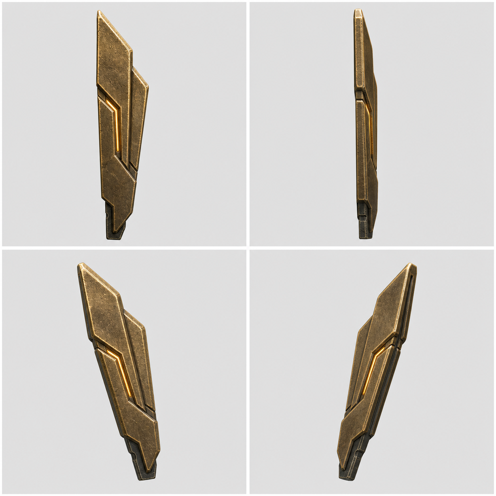
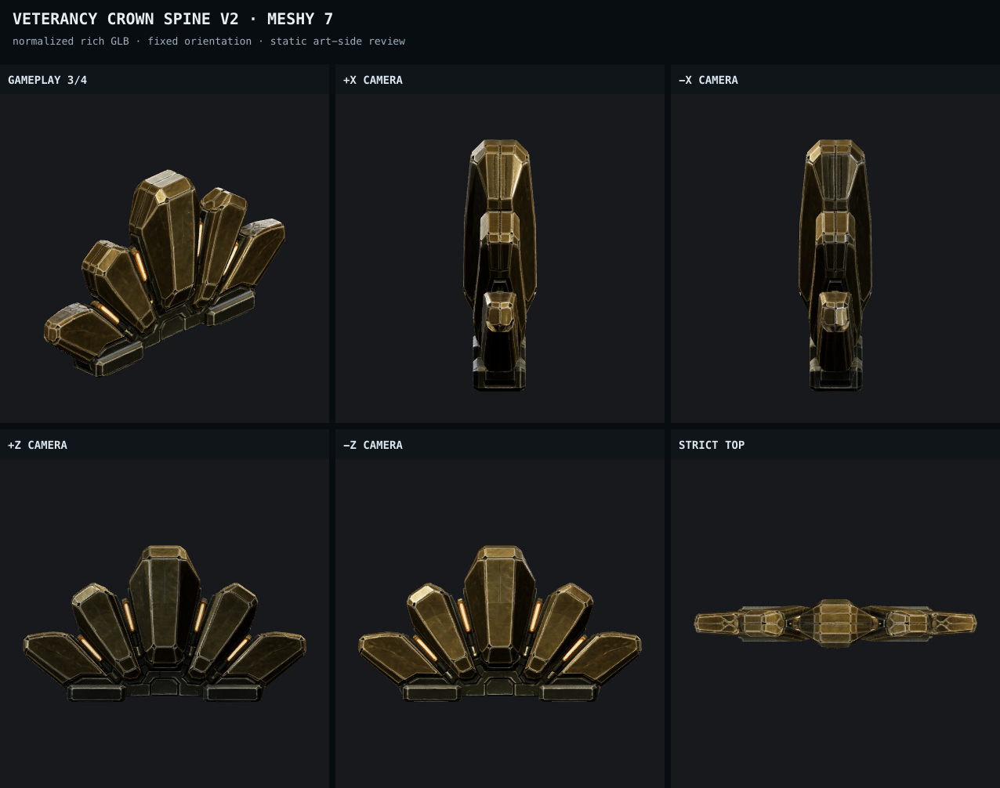

The first 3D composition missed the concept.
The owner rejected the level-5 read on 2026-08-14. The approved art shows a compact, layered Crowned Mantle. The current review instead mounted oversized broad plates across the hull. This page now treats that composition as rejected evidence, not an accepted checkpoint.
The five-petal crown is salvageable after orientation and scale correction. The swept and radial pieces are not faithful enough: their source sheets already describe broad shovel-like armor, so this is an input-design failure rather than a Meshy reconstruction failure.
1 · The authoritative target
The maximum-rank target is a crown-led silhouette with slim layered feathers and compact chassis-following mantles. The attachment rhythm must feel integrated and elite, not like four weapons bolted onto the sides.


2 · The rejected 3D read
The crown was too small or presented edge-on, while the side modules were too broad, too flat, and too far from the dorsal crown cluster. They dominate the chassis as armor slabs rather than completing its crown.

3 · Corrected feather input candidate
This is the proposed replacement direction before another provider call: one narrow connected feather, layered stepped vanes, clipped tip, graphite root, and a restrained amber seam. Inner and outer pairs can reuse this object at different scales and cant angles, matching the authoritative winged-crown progression more closely.

4 · What remains usable
The corrected five-petal crown geometry itself matches the reference family reasonably well. Its next composition test must rotate its broad face toward the gameplay camera/chassis width, enlarge it, and group the feather roots tightly around it.

5 · Rejected module evidence


Next approval gate
- Approve or reject the corrected slim feather candidate.
- After approval, generate one replacement Meshy feather and test crown + four reused feathers on Kestrel before touching the other module families.
- Only a concept-matched gameplay-scale composition can reopen the all-sixteen fit and optimization work.